A newer version of Puppet Enterprise has been released!
Puppet Enterprise 1.1 Manual
Welcome to Puppet Enterprise!
Thank you for choosing Puppet Enterprise 1.1. This distribution is designed to help you get up and running with a fully operational and highly scalable Puppet environment as quickly as possible, and ships with a complementary ten-node license for evaluation purposes.
Supported Systems
This release of Puppet Enterprise supports the following operating system versions:
| Operating system | Version | Arch | Support |
|---|---|---|---|
| Red Hat Enterprise Linux | 5 and 6 | x86 and x86_64 | master/agent |
| Red Hat Enterprise Linux | 4 | x86 and x86_64 | agent |
| CentOS | 5 | x86 and x86_64 | master/agent |
| CentOS | 4 | x86 and x86_64 | agent |
| Ubuntu LTS | 10.04 | 32- and 64-bit | master/agent |
| Debian | Lenny (5) and Squeeze (6) | i386 and amd64 | master/agent |
| Oracle Linux | 5 | x86 and x86_64 | master/agent |
| SUSE Linux Enterprise Server | 11 | x86 and x86_864 | master/agent |
| Solaris | 10 | SPARC and x86_64 | agent |
Future releases will support additional operating systems.
Before You Install
Puppet Enterprise is designed to support the most common structure of Puppet deployment, with a large number of agent nodes receiving configurations from a puppet master. When installing Puppet at your site, you will need to decide in advance which server will serve as puppet master and ensure that its address can be resolved by name.
The configuration of your site can be further simplified by ensuring (usually by adding a CNAME record to your site’s DNS configuration) that the puppet master server can also be reached at the hostname puppet.
Installing Puppet Enterprise
To install Puppet Enterprise, navigate to the distribution directory in a shell session and run ./puppet-enterprise-installer with root privileges; this will run the installer in interactive mode and guide you through the process of customizing your installation.
After you have customized your installation, Puppet Enterprise will install the requested software in /opt/puppet, start all of the relevant services, and configure this machine to start Puppet at every boot.
Customizing Your Installation
The Puppet Enterprise installer will ask which of the primary Puppet components (master, Dashboard, and agent) you wish to install on the current machine; for each component you select, additional configuration information will be requested.
puppet master
The puppet master service is the center of your Puppet installation: it holds the modules and manifests describing your site, controls which computers are allowed to receive configurations, and determines which configurations each node should receive. Puppet Enterprise currently supports sites with a single puppet master server; future releases will support more complex deployments.
The following puppet master options can be specified at install time:
Certified Hostnames
During installation, puppet master requires a colon-separated list of the hostnames by which it will be reachable to agent nodes.
Puppet’s communications are secured with SSL certificates, with signing usually handled by a certificate authority installed alongside puppet master. A certificate for the puppet master will be generated and signed during installation, and puppet agent nodes will only consider this certificate valid if they connect to one of the hostnames supplied when it was generated.
The installer will detect the server’s hostname, and will offer the following default list of hostnames to certify:
- The server’s fully-qualified domain name
- The server’s short hostname
- puppet.{domainname}
- puppet
These defaults will most likely be sufficient, but can be overridden as needed.
Note that the special short hostname puppet will always be included in the puppet master’s SSL certificate; if you configure your site’s DNS to direct searches for puppet to the puppet master server, it can greatly simplify configuration.
Integration with Puppet Dashboard
If you are installing Puppet Dashboard at your site, the puppet master must be properly configured to take advantage of it. As described below, Puppet Dashboard can serve as both a reports viewer and an external node classifier; puppet master can be configured to use both functions or only one.
After choosing to use Dashboard for reports and/or node classification, the installer will ask for your Dashboard’s hostname and port. The default answers assume you are running the Puppet Dashboard under its default configuration on the same server as the puppet master; if you are running the Dashboard on a different server, make sure to configure both machines’ firewalls such that the master can reach it.
Puppet Dashboard
Puppet Dashboard is an optional addition to the Puppet solution, and provides a convenient web interface for viewing reports and assigning classes and parameters to nodes. The Dashboard is frequently run on the same server as puppet master, but can also be installed on a separate machine.
If installing the Dashboard, you will need to assign it a port (the default is 3000) and provide for access to a MySQL database. Puppet Enterprise’s installer can install and configure a new MySQL database server, or it can configure Puppet Dashboard to connect to an existing MySQL server.
Installing a New MySQL Database Server
If you choose to install a new MySQL server on this computer, the software will be installed from your operating system vendor’s package repositories. You will be asked to provide a password for MySQL’s root user.
Using a Pre-existing MySQL Database Server
Puppet Dashboard can also connect to a pre-existing remote or local database server; if the server is remote, the installer will ask for a hostname and port.
When using a pre-existing server, you will need to manually create a user for Puppet Dashboard, create a database, and ensure that Dashboard’s user has ALTER, CREATE, DELETE, DROP, INDEX, INSERT, SELECT, and UPDATE privileges on that database before completing the installation. Consult the MySQL documentation for more details. The relevant commands will likely resemble the following:
CREATE DATABASE dashboard CHARACTER SET utf8;
CREATE USER 'dashboard'@'localhost' IDENTIFIED BY 'password';
GRANT ALL PRIVILEGES ON dashboard.* TO 'dashboard'@'localhost';
Before performing the installation, the Puppet Enterprise installer will provide a code snippet which can be copied and pasted verbatim into an interactive MySQL shell.
MySQL Database Configuration
The installer will ask for a MySQL user name, a password, and a database name. If you chose to use a new database server, this information will be used to configure a new user and database for Puppet Dashboard. If you chose to use a pre-existing server, Puppet Dashboard will use this information to connect and identify itself.
A Note on Firewalls
You may have to configure your system’s firewall after installation in order to access the Dashboard’s web interface from other computers on the network. See “Configuring and Troubleshooting” below.
puppet agent
The puppet agent service runs on every node managed by Puppet; it contacts a designated puppet master server, provides information about the node, and receives and applies configurations.
The following puppet agent options can be specified at install time:
Unique Identifier (Certificate Common Name, or “certname”)
Like the puppet master server, each puppet agent node is identified by an SSL certificate signed by the CA certificate. Unlike the master, an agent node’s certificate does not have to identify a valid address at which the node can be contacted; instead, the certificate’s Common Name (referred to as a “certname” in most documentation) must simply contain a unique string identifying the node.
Nevertheless, common practice is to use a node’s fully-qualified domain name as its certname, which is the default option provided by the installer. If domain names change frequently at your site or are otherwise unreliable, you may wish to investigate other schemes of node identification, such as Universally Unique Identifiers or the hash of a permanent attribute of the node.
puppet master Hostname
By default, puppet agent will attempt to connect to a puppet master server at the hostname puppet. If necessary, you can override this with a hostname of your choosing during installation.
Copying Plugins From puppet master With pluginsync
Pluginsync allows puppet agent nodes to receive executable Ruby code from their puppet master. This is most frequently used for custom facts, types, and providers.
In most cases, you will want to enable pluginsync.
Development Libraries
Some users may wish to install additional RubyGems packages for use with Puppet Enterprise, and a significant subset of gems require native code to be compiled. Since PE provides its own copy of Ruby (and gem), you will need PE-specific copies of the Ruby development libraries if you intend to install any gems with native bindings.
If your platform’s build tools are not currently installed and you choose to install the Ruby development libraries, Puppet Enterprise will ask to install those tools from your operating system vendor’s package repositories; see “Additional Packages” below.
If you do not install the development libraries when installing Puppet Enterprise and find that you need them later, you can install the necessary packages manually; see “Configuring and Troubleshooting” below.
Convenience Links
Puppet Enterprise installs the Puppet software and manpages into subdirectories of /opt/puppet, which aren’t included in your system’s default $PATH or $MANPATH. For ease of use, the installer can create symbolic links to the Puppet executables in /usr/local/bin and install pe-man, a tool which functions similarly to the traditional man utility (e.g. pe-man puppet or pe-man puppet agent).
If you do not expect to manually invoke Puppet on this machine, these conveniences are not necessary. If you do expect to manually invoke Puppet but do not wish to install the convenience links, you can add /opt/puppet/bin to the PATH and /opt/puppet/share/man to the MANPATH of each user who will be working with Puppet. (Or, alternately, invoke the Puppet executables using their full paths.)
Additional Packages
Puppet Enterprise requires certain software from your operating system vendor’s package repositories, and it is possible that your system will be missing some of this software at the time of installation. The Puppet Enterprise installer will list which packages (if any) are still needed, and will offer to automatically install them using your system’s package management tools. If you decline to automatically install these packages, the installer will exit so you can install them manually.
Advanced Installation
Installer Options
The Puppet Enterprise installer will accept the following command-line flags:
-a ANSWER_FILE— Read answers from file and quit with error if an answer is missing.-A ANSWER_FILE— Read answers from file and prompt for input if an answer is missing.-D— Display debugging information.-h— Display a brief help message.-l LOG_FILE— Log commands and results to file.-n— Run in ‘noop’ mode; show commands that would have been run during installation without running them.-s ANSWER_FILE— Save answers to file and quit without installing.
Non-interactive Installation
To streamline your deployment, the Puppet Enterprise installer can run non-interactively. When run with the -a or -A flags, the installer will load an answer file specified by the user.
Answer files are simply shell scripts; they set a number of predefined variables and are sourced by the installer at runtime. Although static answer files are easily generated by running the installer with the -s ANSWER_FILE option, they can also be constructed by hand or with other tools, and can contain arbitrary shell code. This feature of the installer can be used to, for example, automate the generation of puppet agent certnames for sites that do not identify nodes by FQDN.
Further details and a full description of the available variables can be found in Appendix A.
Getting to Know Puppet Enterprise
An unmodified installation of Puppet Enterprise differs from an unmodified installation of the free version of Puppet in several subtle and not-so-subtle ways.
The most immediate difference you’ll notice is that every Puppet Enterprise component you install on a given machine is immediately started upon the installer’s completion, and is already configured to start at boot; you do not need to configure additional init scripts.
The following are some other important differences which aren’t as immediately evident but which are worth becoming aware of:
Licensing
Puppet Enterprise can be evaluated with a complementary ten-node license; beyond that, a commercial per-node license is required for use. A license key will have been emailed to you after your purchase, and the puppet master serving as the certificate authority will look for this key at /etc/puppetlabs/license.key. Puppet will log warnings if the license is expired or exceeded, and you can view the status of your license by running puppet license at the command line on the CA master.
To purchase a license, please see the Puppet Enterprise pricing page; for more information on licensing terms, please see the licensing FAQ. If you have misplaced or never received your license key, please contact sales@puppetlabs.com.
puppet master Under Passenger and Apache
Puppet master communicates with its agents via HTTP, and thus needs a web server; in unmodified standard Puppet, this means WEBrick, which is bundled with Ruby 1.8.
WEBrick is an ideal default server because it works out of the box without additional configuration; it is less than ideal for production deployment, as it cannot handle simultaneous requests in parallel. Deployments which need to scale beyond an approximately ten node trial usually adopt one of several more efficient web servers.
Puppet Enterprise bundles Apache 2.2 and Phusion Passenger (AKA mod_rack / mod_passenger / mod_rails), Puppet Labs’ recommended solution for scaling, and it configures puppet master appropriately during installation. If you’re familiar with puppet master under WEBrick or are following a tutorial written for the standard version of Puppet, you’ll notice some behavioral differences; most visibly, puppet master often does not appear in the list of running processes, and there is no puppet master init script.
This is due to the way puppet master is managed by Apache and Passenger. In a nutshell, Apache handles all incoming HTTP requests, and if any of said requests are destined for an application managed by Passenger, mod_passenger will spawn and manage instances of that application as needed. (A more detailed but still compact overview of how Passenger manages Ruby applications can be found here.) The upshot is that puppet master never needs to be run directly and will frequently not even be running, but as long as Apache (pe-httpd) is running, puppet master will be able to respond efficiently to agent nodes.
Puppet Dashboard also runs under Passenger and Apache, and if you have installed puppet master and Dashboard on the same system, they will make use of the same Apache processes.
Should you need to restart puppet master or Puppet Dashboard, you can simply restart Apache; use either your system’s service controls or the copy of apachectl located in /opt/puppet/sbin. Alternately, if you wish to restart either service independently of Apache, you can modify (with touch, e.g.) /var/opt/lib/pe-puppetmaster/tmp/restart.txt and/or /opt/puppet/share/puppet-dashboard/tmp/restart.txt, respectively; see the Phusion Passenger documentation for more details.
Names and Locations
Part of this distribution’s goal is to provide a self-contained Puppet stack; to avoid file name and process name collisions, many of the standard files and directories are installed in locations slightly different from where a hand-installed/gem-installed/vendor-supplied copy of Puppet would place them. As such, experienced users may be briefly disoriented, and much of the standard documentation should be read with these alternate locations in mind. Below is a brief summary of how Puppet Enterprise’s organization differs from that of standard Puppet:
- The Puppet software, which includes self-contained Ruby and Apache environments, is installed in
/opt/puppet. Executables are in/opt/puppet/binand/opt/puppet/sbin. - Puppet Enterprise’s main config directory is located at
/etc/puppetlabs/puppet, rather than the more common/etc/puppet. - User names, service and process names, and the names of several key directories (notably Puppet’s
vardir,logdir, andrundir; see the main Puppet documentation for more information about these directories) are all prefixed withpe-. - As Puppet Enterprise uses its own version of Ruby, care must be taken to ensure that any
raketasks (e.g. for maintenance of Dashboard reports) or ad-hoc recipes are interpreted by the proper copy of the Ruby binaries. This can be accomplished by changing the environment on a per-command basis; e.g.:PATH=/opt/puppet/bin:$PATH rake RAILS_ENV=production reports:prune upto=1 unit=mon
Using Puppet Enterprise
If you’re an experienced Puppet user, we’ll be brief: dive in! Dashboard works as expected, and the directory frequently known as /etc/puppet can be found at /etc/puppetlabs/puppet.
If you’re new to Puppet, here are a few quick walkthroughs to introduce you to its capabilities:
Installing a Public Module
The Puppet platform enables sharing and reuse of modules, which can help you deploy common functionality and design patterns with a fraction of the usual time and effort. Modules can come from anywhere, but the canonical gathering place for module authors is the Puppet Forge. In this walkthrough, you will install a simple module from the Forge.
The first step is to find a module that suits your needs; in this case, we’ll be using puppetlabs/motd, a demonstration module that sets a node’s message-of-the-day file.
Modules can be downloaded from the Forge by name and automatically untarred using the puppet-module tool, which ships with Puppet Enterprise:
# puppet-module install puppetlabs-motd
(Alternately, you can download the same tarball from the module’s Forge page and manually untar it; either method will prepare the module in a new directory under your current working directory.)
Next, you must:
- Move the new module into puppet master’s
modulepath(Puppet Enterprise’s defaultmodulepathis located at/etc/puppetlabs/puppet/modules; if you ever need to discover your master’s modulepath, you can do so withpuppet master --configprint modulepath) - Rename the module to remove the
username-prefix
In our case, that amounts to:
# mv puppetlabs-motd /etc/puppetlabs/puppet/modules/motd
And you’re done! Your new module is installed and ready to use. Any of the module’s classes and defined types can now be declared in manifests, any custom functions it offers are now available on the puppet master, and any custom facts it provides will be synced to agent nodes via pluginsync.
Classifying Nodes With Puppet Dashboard
Since the module we just installed provides a class, we can now declare that class in any node. If we were defining nodes individually in puppet master’s main manifest (default: /etc/puppetlabs/puppet/manifests/site.pp), we could use a simple class declaration or include statement:
node 'agent1.mysite.org', 'agent2.mysite.org', 'agent3.mysite.org' {
class {"motd": }
# or:
# include motd
}
However, we can also use Puppet Dashboard to declare module classes for a group of nodes. If you selected and configured Puppet Dashboard during installation, open a web browser and navigate to http://{your dashboard server}:3000. In the sidebar, you’ll see an empty list of classes, along with an “Add class” button:
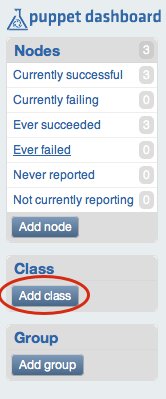
Use this button to tell Dashboard about the class; simply refer to the class by name as you would in a Puppet manifest.
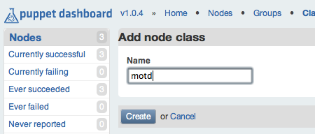
Next, let’s add a group of classes. We could apply the new class directly to nodes, but since groups offer a convenient way to apply a set of clases at once, let’s go ahead and start building a set of classes for machines which offer shell access to users.
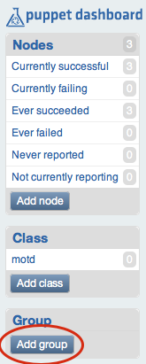
Note that, when we’re choosing which classes to add to a group, Dashboard will offer suggestions based on the classes you have entered:
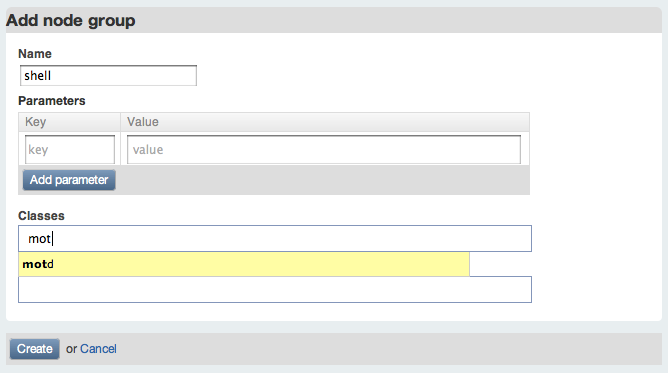
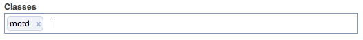
Then we click “Create,” and can view our completed group:
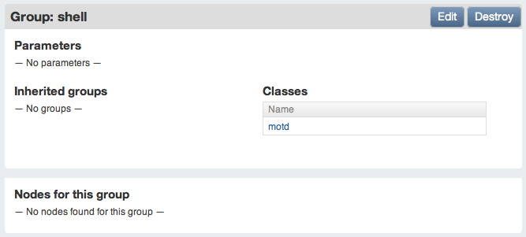
It’s not doing anything right now, so let’s assign a node to the group. Go to the list of currently successful nodes, and choose a node to edit:
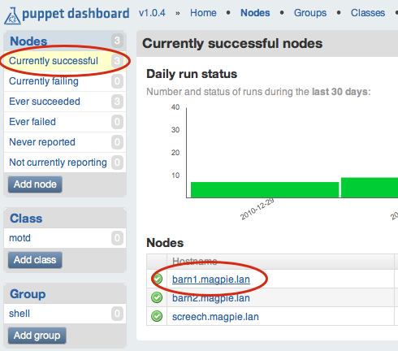
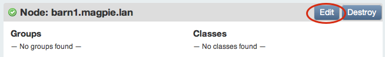
As with classes, Dashboard will offer group name suggestions while you type:
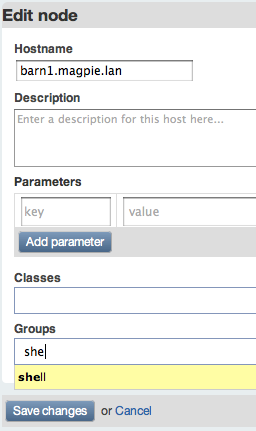
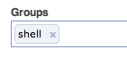
Then we click “Save changes,” and our node will be a member of the “shell” group, inheriting all of the group’s classes.
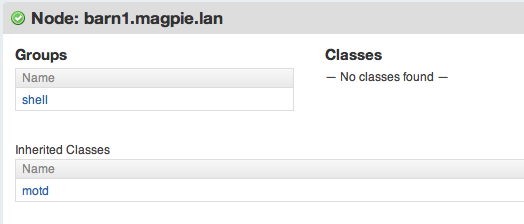
The next time this node’s puppet agent contacts the master, its /etc/motd file will be populated from the motd module’s template. Whenever we install new modules and specify that classes they provide should be included in the “shell” group, all nodes in the group will make the necessary changes.
Configuring and Troubleshooting
What follows is a short list of common problems that can prevent a Puppet site from working as expected. Additional troubleshooting information can be found at the main Puppet documentation site, on the Puppet Users mailing list, and in #puppet on freenode.net.
Furthermore, please feel free to contact Puppet Labs’ enterprise technical support. When reporting issues with the installer itself, please run the installer using the -D debugging flag and provide a transcript of the installer’s output along with your description of the problem.
Firewall Issues
If not configured properly, your system’s firewall can interfere with access to Puppet Dashboard and with communications between the puppet master server and puppet agent nodes. In particular, CentOS and Red Hat Enterprise Linux ship with extremely restrictive iptables rules, which may need to be modified.
When attempting to debug connectivity issues (especially if puppet agent nodes are generating log messages like err: Could not request certificate: No route to host - connect(2)), first examine your firewall rules and ensure that your master server is allowing tcp connections on port 8140 and your Dashboard server is allowing tcp connections on port 3000.
If you use the REST API and have configured puppet agent to listen for incoming connections, your agent nodes will need to allow tcp connections on port 8139.
Certificate Issues
The learning curve of SSL certificate management can lead to a variety of problems. Watch out for the following common scenarios:
Agent nodes are contacting their master server using a hostname not listed in the master’s certificate
Agent nodes determine the validity of the master’s certificate based on hostname; if they’re contacting it using a hostname that wasn’t included when the certificate was signed, they’ll reject the certificate.
Solution: Either modify your agent nodes’ settings (and your site’s DNS, if applicable) to point to one of the master’s certified hostnames, or re-generate and re-sign the master’s certificate.
An agent node’s OS has been re-installed, and the master will no longer communicate with it
The puppet master stores signed agent certificates based on nodes’ certnames (unique IDs), which are usually fully-qualified domain names. If a node loses its certificates but retains its unique ID, as would happen if the OS and Puppet were re-installed from scratch, it will re-generate its certificate and send a signing request to the master. However, since the master already has a signed certificate cached for that node, it will ignore the signing request and expect the node to contact it using the old (and now lost) certificate.
A similar situation can arise if an agent node is rebuilt while a previous signing request is still pending.
Solution: On the master server, run puppet cert --clean {agent certname}. The master should now accept the node’s signing request and wait for permission to sign it.
An agent’s hostname has changed, and it can no longer contact its master
Puppet Enterprise always writes a node’s unique identifier to puppet.conf during installation, which provides some resilience against hostname changes that might otherwise change the node’s “certname.” However, if a node’s puppet.conf is modified with a new certname, or if the certname is overridden on the command line at runtime, it is possible to wind up with a mismatch that will result in the master rejecting the certificate.
Solution: If the new certname is permanent, simply delete the node’s /etc/puppetlabs/puppet/ssl directory, and the node will generate a new certificate and send a new signing request to the master. You can also clean the previous certificate on the master if you expect to re-use the old unique identifier for a new agent node.
The master server has been replaced, and is not recognized by any existing agent nodes
All nodes in a given domain must be using certificates signed by the same CA certificate. Since puppet master generates a new CA cert during installation, a new master node will, in its default state, be rejected by any agent nodes which were aware of the previous master.
Solution: There are two main options: either delete the /etc/puppetlabs/puppet/ssl directory from each agent node (thereby forcing each node to re-generate certificates and issue new signing requests), or recover the CA certificate and private key from the previous master server and re-generate and re-sign the new master’s certificate. The short version of how to do the latter is as follows:
- Stop puppet master using your system’s service utilities (e.g., on CentOS:
service pe-httpd stop) - Run
puppet cert --clean {master's certname} - Replace the
/etc/puppetlabs/puppet/ssl/cadirectory with the same directory from the old master - Run
puppet master --no-daemonize, wait approximately 30 seconds, then end the process with ctrl-C - Start puppet master using your system’s service utilities
(As you can see, replacing a master server requires a certain amount of planning, and if you expect it to be a semi-regular occurrence, you may wish to investigate certificate chaining and the use of external certificate authorities.)
Miscellaneous Issues and Additional Tasks
Manual installation of the Ruby development libraries
If you find that you need the Ruby development libraries but skipped them during installation, Puppet Labs currently recommends installing the packages manually rather than re-running the installer. The method for this will depend on your operating system’s package management tools, but in each case, you must first navigate to the directory containing the packages for your operating system and architecture, which will be inside the packages subdirectory of the Puppet Enterprise distribution tarball.
For systems using apt and dpkg (Ubuntu and Debian), execute the following commands:
dpkg -i *ruby*dev*
apt-get install --fix-broken
For systems using rpm and yum (Red Hat Enterprise Linux, CentOS, and Oracle Linux), execute the following commands:
yum localinstall --nogpgcheck *ruby*dev*
Configuring older agent nodes to work with Puppet Dashboard
Puppet Dashboard learns about your site’s agent nodes from report data sent by the puppet master. If you view the Dashboard immediately after installing it, you’ll notice that it has no nodes listed; a full list of nodes will be built over the course of the following check-in cycle, and Dashboard will begin to track each node’s history.
This requires that your site’s agent nodes be configured to send report data. Agent nodes running Puppet Enterprise will report by default, but if you are installing PE into an existing Puppet site, it’s possible that some pre-existing agent nodes are not sending report data and will not appear in the Dashboard. If you suspect this to be the case, check the missing nodes’ puppet.conf file and ensure that the [agent] or [puppetd] section contains report = true.
Importing existing node information into Puppet Dashboard
If your previous Puppet architecture included stored reports on the puppet master (that is, if agent nodes were configured with report = true and the master was configured with reports = store), importing the reports into Puppet Dashboard can add value to this existing knowledge.
To run the report importer, first locate the reports directory on your previous puppet master and copy it to the server running Puppet Dashboard. (N.B.: If invoked with --configprint reportdir, puppet master will return its reports directory and exit.) Then, on the Puppet Dashboard server, run the following commands with root privileges:
cd /opt/puppet/share/puppet-dashboard
PATH=/opt/puppet/bin:$PATH REPORT_DIR={old reports directory} rake reports:import
If you have a significant number of existing reports, this task can take some time, so plan accordingly.
Appendix A: Answer File Reference
When run with the -a or -A flag and a filename argument, the Puppet Enterprise installer will read its installation instructions from an answer file. -a will use the provided answer file to perform a non-interactive installation (which will fail if any required variables are not set), and -A will perform a partially-interactive installation, prompting the user for any missing answers.
Answer files consist of normal shell script variable assignments (q_puppetdashboard_database_port=3306), and can include arbitrary control logic or assign variables based on the output of backtick-wrapped shell commands. One of the most common uses of answer files is to automatically set a puppet agent node’s unique identifier (certname) to something other than its fully-qualified domain name; this is most efficiently done by running the installer with -s ANSWER_FILE, then editing the resultant file to include, for example:
q_puppetagent_certname=`uuidgen`
The answer file could then be used for any number of puppet agent installations without further modification or interaction.
Boolean answers should use Y or N (case-insensitive) rather than true, false, 1, or 0.
A variable can be omitted if another answer ensures that it won’t be used (i.e. q_puppetmaster_certname can be left blank if q_puppetmaster_install = n).
puppet master Answers
q_puppetmaster_install- Y or N (Default: Y) — Sets whether the puppet master service will be installed on this computer.
q_puppetmaster_certname- String (Default: {computer’s fully-qualified domain name}) — Sets the puppet master’s SSL certificate common name (CN). This should usually be set to either “puppet” or the server’s fully-qualified domain name.
q_puppetmaster_certdnsnames- String (Default: puppet:puppet.{computer’s domain}:{computer’s hostname}:{computer’s fully-qualified domain name}) — Sets the puppet master’s certified hostnames. Must be a colon-separated list of hostnames and fully-qualified domain names.
q_puppetmaster_use_dashboard_reports- Y or N (Default: Y) — Sets whether the puppet master will send reports received from puppet agent nodes to Puppet Dashboard.
q_puppetmaster_use_dashboard_classifier- Y or N (Default: Y) — Sets whether the puppet master will request node definitions from Puppet Dashboard.
q_puppetmaster_dashboard_hostname- String (Default: localhost) — Sets the hostname where Puppet Dashboard is located. Used when
q_puppetmaster_use_dashboard_reports= y orq_puppetmaster_use_dashboard_classifier= y. q_puppetdashboard_database_root_password- Y or N (Default: Y, unless MySQL is already installed on this system) — Sets the password that will be assigned to MySQL’s root user. Used when
q_puppetdashboard_database_install= y.
Puppet Dashboard Answers
q_puppetdashboard_install- Y or N (Default: Y) — Sets whether Puppet Dashboard will be installed on this computer.
q_puppetdashboard_httpd_port- String (Default: 3000) — Sets which port Puppet Dashboard will use.
q_puppetdashboard_database_install- Y or N (Default: Y) — Sets whether to install and configure a new MySQL database from the OS’s repositories.
q_puppetdashboard_database_root_password- Y or N (Default: Y, unless MySQL is already installed on this system) — Sets the password that will be assigned to MySQL’s root user. Used when
q_puppetdashboard_database_install= y. q_puppetdashboard_database_remote- Y or N (Default: Y) — Sets whether the MySQL database server is running on a remote host; if set to N, Dashboard will be configured to connect to a database on localhost. Used when
q_puppetdashboard_database_install= n. q_puppetdashboard_database_host- String (Default: localhost) — Sets the hostname of the remote MySQL database server. Used when
q_puppetdashboard_database_remote= y. q_puppetdashboard_database_port- String (Default: 3306) — Sets the port used by the remote MySQL database server. Used when
q_puppetdashboard_database_remote= y. q_puppetdashboard_database_name- String (Default: dashboard) — Sets the name of the database Dashboard will use.
q_puppetdashboard_database_user- String (Default: dashboard) — Sets the MySQL user Dashboard will connect to the database server as. This user must already exist on the MySQL server, and must have the necessary privileges (see “Puppet Dashboard” above) for the database Puppet Dashboard will be using.
q_puppetdashboard_database_password- String or blank (Default: {blank password}) — Sets the password with which Puppet Dashboard’s MySQL user will connect to the database.
puppet agent Answers
q_puppetagent_install- Y or N (Default: Y) — Sets whether the puppet agent service will be installed on this computer.
q_puppetagent_certname- String (Default: {computer’s fully-qualified domain name}) — Sets the unique identifier (“certname”) for this puppet agent node’s SSL certificate.
q_puppetagent_server- String (Default: puppet; however, if
q_puppetmaster_install= y, this will default to the value ofq_puppetmaster_certname.) — Sets the hostname of the puppet master. q_puppetagent_pluginsync- Y or N (Default: Y) — Sets whether to sync executable Ruby code (e.g. custom facts, types, and providers) from the puppet master.
Other Answers
q_rubydevelopment_install- Y or N (Default: N) — Sets whether to install the Ruby development libraries for Puppet Enterprise’s copy of Ruby.
q_vendor_packages_install- Y or N (Default: Y) — Sets whether the installer has permission to install additional packages from the operating system’s repositories. If this is set to “n,” the installation will only go forward if the installer detects no missing dependencies.
q_puppet_symlinks_install- Y or N (Default: Y) — Sets whether
/usr/local/binshould contain symbolic links to the Puppet executables (located in/opt/puppet/bin). q_install- Y or N (Default: Y) — Sets whether the installation should occur. Setting this to “n” is not considered useful for non-interactive installation.
Contents
- Welcome to Puppet Enterprise!
- Supported Systems
- Before You Install
- Installing Puppet Enterprise
- Customizing Your Installation
- Advanced Installation
- Getting to Know Puppet Enterprise
- Using Puppet Enterprise
- Configuring and Troubleshooting
- Appendix A: Answer File Reference
Download the Docs

Download Puppet Enterprise